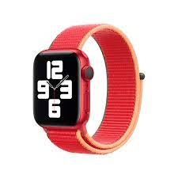

ITEMS
[Weapons]
LASR- Laser Assualt Super Rifle

Developed by Lucas Barellio, this futuristic rifile was lost to time after the demise of Rebirth. This weapon uses electricity through batteries to condense energy into a bolt and propel it towards the target. Since it is a bolt of energy, this weapon is not great at penetrating objects/armor. [STATS] DMG: 5D6 CAP: 10 Shots ROF: 2 CAL: Electricity
[Drugs]
Tarogen

The newest kick on the street, Tarogen is one of the most addicting drug available. On the plus side, it increases the users Reflex and feels real good too. Unfortunatly all that reflex will go into dodging and shooting hallucinations. [STATS] Diff: 25 STR: 3 +3 Reflex Euphoric Hallucinogenic Psychological Addiction
Dupe Pill
Another marvel of Rebirth and developed by Dr. Chang, this drug has the ability to duplicate the user for up to 4 hours. [STATS] Diff: ??? STR: ??? Grants Multiplicity tier 1 for 4 hours
Super Strength Pill

This pill grants the user immesurable strength, otherwise a miracle drug for some. Sadly this drug was lost to time when Rebirth was disbanded. If not stored in proper conditions (below 30F) then the drug will degrade over time. [STATS] Diff: ??? STR: ??? Grants Super Strength tier 9 for 1 hour (Degraded) Super Strength tier 9-1 for every 24 hours outside of containment for 1 hour
[Power Items]
Ring of Darthon

An almost ancient ring held by a member of Rebirth, Darthon. This ring gave him majority of his powers when he first started, and kept him alive in the deep future. This ring allows the user to duplicate themselves, and also shrink themselves to ant size. [STATS] Multiplicity tier 4 Size Alteration to Ant
JoJo Power Band
An equally rare item, this band's power belonged to the Revenger's JoJo, who killed DeathStroke himself. Upon his death, his powers were taken by Gary, who imbued it into a band and added his own power to it. [STATS] Talk to animals Elasticity Steal 1 power, indefinatly on the band